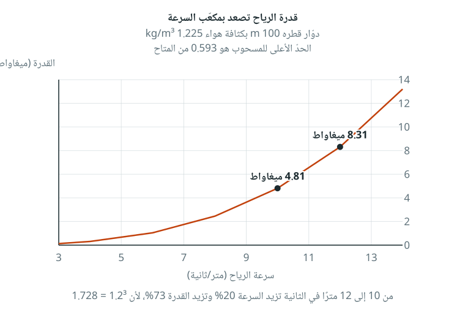

توربين الرياح
Wind Turbine
آلة تحوّل الطاقة الحركية للهواء المارّ عبر مساحة دوّارها إلى عزم على المحور ثم كهرباء. القدرة المتاحة تتناسب مع مكعّب السرعة، ولا يُسحب منها أكثر من 16/27 أي 0.593 حسب حدّ بيتز.
توربين الرياح يحوّل الطاقة الحركية للهواء المارّ عبر مساحة دوّاره إلى عزم على المحور ثم إلى كهرباء. القدرة المتاحة تتناسب مع مكعّب سرعة الرياح: P = ½·ρ·A·v³، فمضاعفة السرعة تضاعف القدرة ثماني مرات. هذه الحساسية هي التي تجعل مواقع الرياح تُصنَّف بمنحنيات سرعة سنوات لا بقياس يوم واحد.
الدوّار لا يستطيع سحب كل الطاقة، لأن الهواء لو أُبطئ إلى الصفر لتوقف مروره. أقصى ما يمكن سحبه عند تباطؤ الهواء إلى ثلث سرعته الأصلية هو 16/27 من القدرة المتاحة، أي 0.593، وهو حدّ بيتز. أفضل التوربينات الحديثة تصل إلى 0.45–0.50، والباقي يضيع في الدوران المتبقي وفي مقاومة الشفرات.
كيف تعمل الظاهرة؟
مقطع الشفرة على شكل جناح طائرة. مرور الهواء يخلق ضغطًا أدنى على السطح العلوي، فتنشأ قوة رفع تدوّر الدوّار. جزء من هذه القوة يدفع المحور في اتجاه الريح فيُحمّل البرج والأساس. عند السرعات العالية تُدار زاوية الميل لتقليل زاوية الهجوم وحماية المولّد من الحمل الزائد. الطاقة الميكانيكية تمرّ بصندوق تروس يرفع الدوران من نحو 15 دورة في الدقيقة إلى 1,500 دورة للمولّد القياسي، أو تُستخدم مولّدات متعددة الأقطاب مباشرة في تصميم الدفع المباشر.
العلاقة بالأرقام
دوّار قطره 100 m مساحته 7,854 m². بكثافة هواء 1.225 kg/m³ عند مستوى البحر: عند 8 m/ث القدرة المتاحة 2.46 MW، وعند 10 m/ث 4.81 MW، وعند 12 m/ث 8.31 MW، أي 1.73 مرة لكل زيادة 20% في السرعة لأن 1.2³ = 1.728. بمردود دوّار 0.45 تُسحب عند 10 m/ث نحو 2.16 MW. المنحنى يفسّر أيضًا تسطّح منحنى القدرة فوق السرعة المقننة: يُقلَّم الميل فتبقى القدرة ثابتة قبل الإيقاف عند سرعة القطع.
مفاهيم متقاربة
يُخلط بين حدّ بيتز وكفاءة المنظومة الكاملة: 0.593 سقف للدوّار وحده، أما الكفاءة من الريح إلى الشبكة فتشمل صندوق التروس والمولّد والمحوّل. ويُخلط بين القدرة الاسمية والإنتاج السنوي: توربين 5 MW لا يعطي 5 MW دائمًا؛ معامل حمل 40% يعني متوسط 2 MW. وخلط ثالث بين السرعة المقاسة عند 10 m على الأرض والسرعة عند ارتفاع المحور 100 m، حيث تزيد الأخيرة بنحو 20–30% بفعل قصّ الريح.
حدود التطبيق
علاقة القدرة بمكعّب السرعة تفترض هواءً ساكنًا قبل الدوّار وتدفقًا منتظمًا، ولا تمثّل الاضطراب ولا ظلّ الأبراج ولا التفاعل بين توربينات المزرعة. عند السرعات المنخفضة جدًّا تغلب مفاقيد الاحتكاك فلا تبدأ الآلة، وعند السرعات العالية تُوقف للسلامة. وتختلف الكثافة بالارتفاع والحرارة: موقع على 2,000 m بكثافة 1.0 kg/m³ يفقد نحو 18% من القدرة عند السرعة نفسها، ولذلك تُصحَّح منحنيات القدرة للكثافة قبل مقارنة التوربينات.

| الكمية | القيمة | المصدر |
|---|---|---|
| حدّ بيتز لأقصى مردود للدوّار | 0.593 نسبة | [1] |
| مساحة دوّار قطره 100 متر | 7,854 متر مربع | [1] |
| القدرة المتاحة عند 10 م/ث | 4.81 ميغاواط | [1] |
| كثافة الهواء عند مستوى البحر | 1.225 كيلوغرام/متر مكعب | [2] |
المصادر
- 1 How Do Wind Turbines Work? — U.S. Department of Energy, EERE. www.energy.gov/eere/wind/how-do-wind-turbines-work · اطُّلع عليه 2026-11-16
- 2 Wind — capacity and electricity generation — International Energy Agency. www.iea.org/energy-system/renewables/wind · اطُّلع عليه 2026-11-16
استشهد بهذا المصطلح
الصيغتان مبنيتان من بيانات الصفحة نفسها: العنوان والتاريخ ورابط النسخة المنشورة.
توربين الرياح — Wind Turbine. (2026). ديوان المعرفة — انفراد. https://infiradev.com/diwan/terms/wind-turbine.html
@misc{wind-turbine2026,
title = {توربين الرياح},
titleaddon = {Wind Turbine},
howpublished = {{ديوان المعرفة — انفراد} — مرجع علمي عربي},
year = {2026},
url = {https://infiradev.com/diwan/terms/wind-turbine.html},
urldate = {2026-11-16},
note = {مراجعة علمية: مراجعة آلية — ديوان المعرفة (روابط المصادر + عقد المحتوى + وجود الرسم) 2026-11-16}
}
راجعه: مراجعة آلية — ديوان المعرفة (روابط المصادر + عقد المحتوى + وجود الرسم) 2026-11-16 · 2026-11-16 · آخر تحديث 2026-11-16